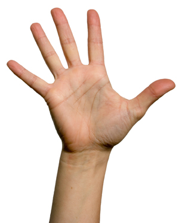
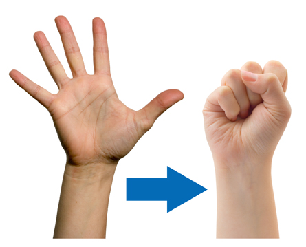
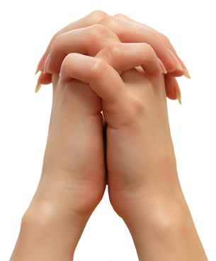
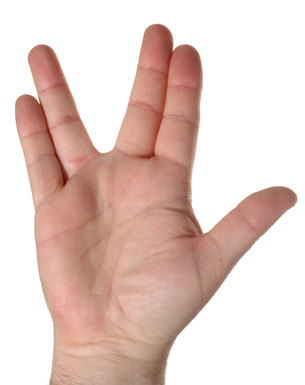

Project 2: Learning the Numeric Keypad
Exercises to Increase Speed
If you are a beginning typist, you may find that some of your fingers are not as strong as others. For example, it is common for a beginning typist to strike the S key instead of the A key because the little finger is not used as often in daily activities and does not have the strength that other fingers have.
By moving your fingers and tapping them as if you were typing in random order, you will strengthen all of your fingers. This will also allow your fingers to move faster.
Many proficient (fast) typists say that when they were learning to type, they would envision the keys in their mind and pretend they were typing words by just moving their fingers in the air. (This is a good exercise for accuracy also.)
Following are several other activities to strengthen your fingers and hands.

© 2009 Jupiterimages Corporation
Fingertip Curl
Slowly bend the finger tips of both hands inward without closing them into a fist. Your fingertips should touch the palm of your hand. Hold this position for a few seconds; then slowly straighten your fingers to relax the muscles. After a few seconds, bend your fingers again. Do this several times.

© Helder Almeida/shutterstock
Five-Finger Stretch
Extend the fingers of both hands, and spread them as far as possible. Hold this position for several seconds; then relax your fingers, allowing them to curl lightly into the palm of your hand. Repeat these movements slowly several times.

open hand: © Helder Almeida/shutterstock
fist: © Tatiana Popova/shutterstock
Fist Clench
Extend the fingers of both hands and spread them as far as possible. Hold this position for several seconds; then curl your fingers into a tight fist with your thumbs pressed firmly on the top. Squeeze your fists tightly for several seconds; then relax the muscles and slowly straighten the fingers. Repeat these movements several times.

© Vladimir Kozieiev/shutterstock
Interlocking Finger Squeeze
Interlace the fingers of both hands. Wring your hands back and forth while holding the heels of your palms firmly against each other. Do this for several seconds.

© Howard Sandler/shutterstock
Two-Finger Stretch
Hold your hands in front of you with your fingers extended and held close together. While holding the middle, ring, and little fingers together, move the index finger as far away from the others as possible. Hold this position for a few seconds; then allow your index finger to return to its position next to the middle finger. Then while holding the index and middle finger together, move them as far away as possible from the other two fingers. Hold this position for a few seconds; then allow your fingers to return to their normal position. Finally, move the little finger as far away as possible from the other three.